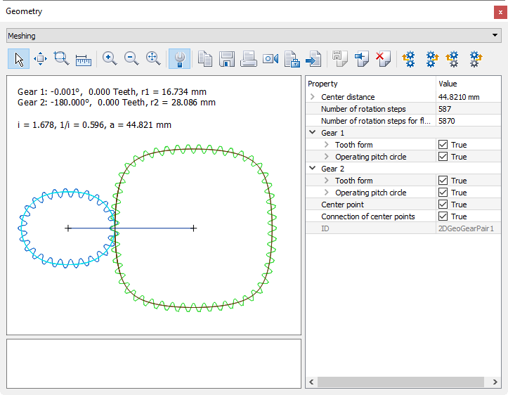

|
|
|


检查啮合
检查啮合的一种有用方法是更改旋转步数（每360°）。您可以在图形窗口中如通常一样更改步长，以使齿轮以更大的或更小的步长转动。

图21.7：更改转动步数
当您生成带有公差的齿轮时，我们建议您点击按钮使齿轮进入齿面接触。
注意
如果点击""按钮时，一个齿轮相对另一个齿轮旋转过多（或不足），则必须相应调整"旋转步数"的数量！
Checking the meshing
A useful way of checking the meshing is to change the number of rotation steps (per 360°) to rotate the gear in larger or smaller steps. You change the step sizes, as usual, in the Graphics window.
Figure 21.7: Changing the rotation steps
When you generate gears with allowances, we recommend you click the button to bring the gears into flank contact with each other.
Note
If, when you click the "" button, one gear rotates too far against the other (or not far enough), you must adjust the number of "rotation steps" accordingly!